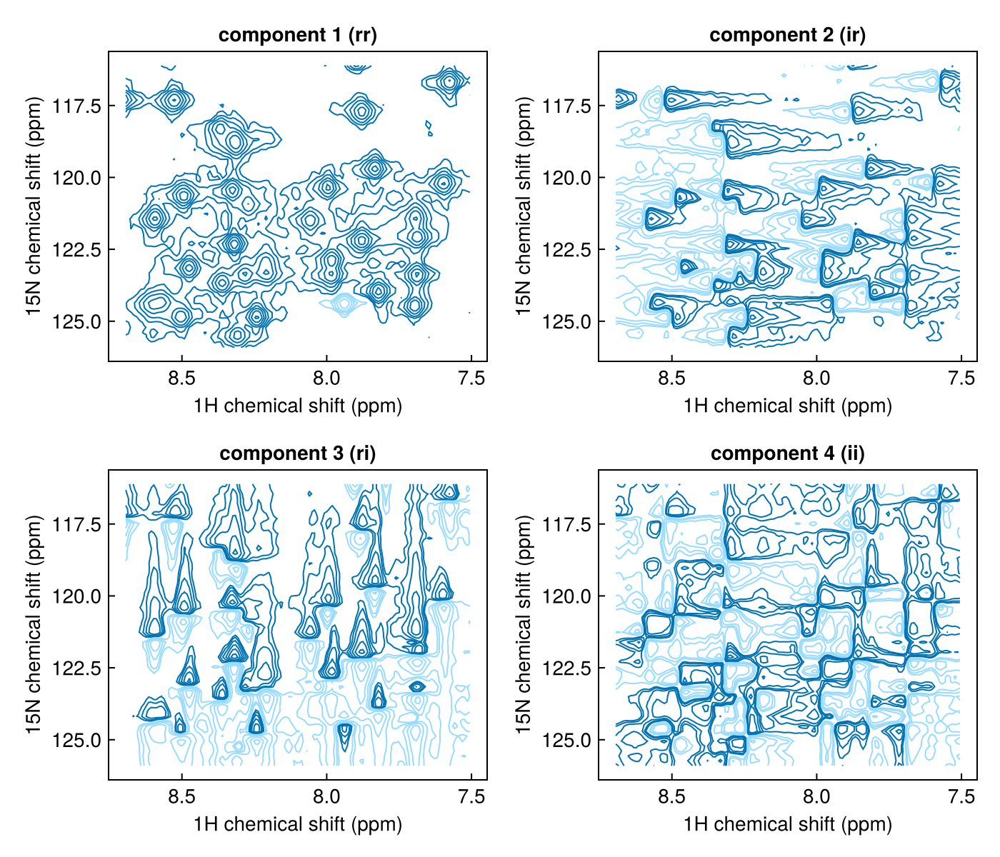

Multicomplex numbers and quadrature
Quadrature detection records two signals, so a 1D FID is complex. In a 2D experiment both the direct and indirect dimensions are quadrature-detected, so each point has four components; a 3D has eight. NMRTools stores these as multicomplex numbers, from MulticomplexNumbers.jl, which give each dimension its own imaginary unit (Delsuc 1988).
One imaginary unit per dimension
A multicomplex number of order N has N imaginary units, im1 to imN, and 2^N real components. Each unit squares to −1, and different units commute:
| Data | Element type | Components |
|---|---|---|
| 1D | Multicomplex{Float64,1,2} | r + i·im1 |
| 2D | Multicomplex{Float64,2,4} | rr + ir·im1 + ri·im2 + ii·im1·im2 |
| 3D | Multicomplex{Float64,3,8} | rrr + irr·im1 + … + iii·im1·im2·im3 |
In the 2D components the first letter refers to the direct dimension and the second to the indirect dimension: ir is imaginary in the direct dimension and real in the indirect one.
im1 is the imaginary unit of the direct dimension. NMRTools does not use Julia's im: even 1D data are Multicomplex{Float64,1,2}, which behaves like a complex number but uses im1, so that 1D and multidimensional data are handled by the same code. complex(spec) converts 1D data to Julia's ComplexF64 when a function needs it.
Linking dimensions to units: :mcindex
Each time and frequency dimension records the imaginary unit it belongs to in its :mcindex metadata:
| Dimension | :mcindex | Imaginary unit |
|---|---|---|
T1Dim / F1Dim | 1 | im1 |
T2Dim / F2Dim | 2 | im2 |
T3Dim / F3Dim | 3 | im3 |
T4Dim / F4Dim | 4 | im4 |
TrelaxDim, X2Dim, … | nothing | none |
loadfid and loadnmr set :mcindex when data are loaded, and nothing changes it afterwards. ft, phase and apodize read it to find which unit to act on: Fourier transforming T2Dim treats im2 as the complex i and leaves im1 alone, and phasing F1Dim rotates by exp(im1·θ).
using NMRTools
fid = exampledata("2D_HN"; fid=true, firstpoint=Dict(T2Dim => 1.0))
eltype(fid), fid[T1Dim, :mcindex], fid[T2Dim, :mcindex](Multicomplex{Float64, 2, 4}, 1, 2)Non-Fourier dimensions such as relaxation delays have no imaginary unit, so a pseudo-2D relaxation series is Multicomplex{Float64,1,2}: complex in the direct dimension only.
The element type is fixed through processing
The element type does not change from loadfid to the final phase correction. Apodization, zero-filling, Fourier transformation and phasing all act on multicomplex data and return multicomplex data. Only at the end is the real part taken. Here the phases are TopSpin's for this dataset:
spec = fid |> apodize(T1Dim, Cos2Window()) |> apodize(T2Dim, CosWindow()) |> zerofill |> ft |>
phase(F1Dim, -247.9, 218.4) |> phase(F2Dim, 90.0, -180.0)
eltype(spec)Multicomplex{Float64, 2, 4}eltype(realest(spec))Float64Taking components
| Function | Result |
|---|---|
realest(x) | the component real in every dimension (rr for 2D), as Float64 |
real(x), imag(x) | the coefficients of the highest-order unit (for 2D: the parts real and imaginary in the indirect dimension, each still complex in im1) |
component(x, k) | component k, numbered in the order of the tables above |
complex(spec) | 1D data as Julia ComplexF64 |
real, imag and component act on single numbers, so broadcast them over a spectrum:
using CairoMakie
region = spec[7.5 .. 8.7, 116 .. 126]
fig = Figure(size=(700, 600))
for (k, name) in enumerate(["rr", "ir", "ri", "ii"])
nmrplot(fig[fldmod1(k, 2)...], component.(region, k); title="component $k ($name)")
end
The rr component is the absorptive spectrum. ir and ri are dispersive in one dimension, and ii is dispersive in both.
Sign convention
NMRTools spectra are the complex conjugate of TopSpin's in every imaginary unit: the real parts agree and the imaginary parts have opposite signs. See Bruker data and TopSpin conventions.